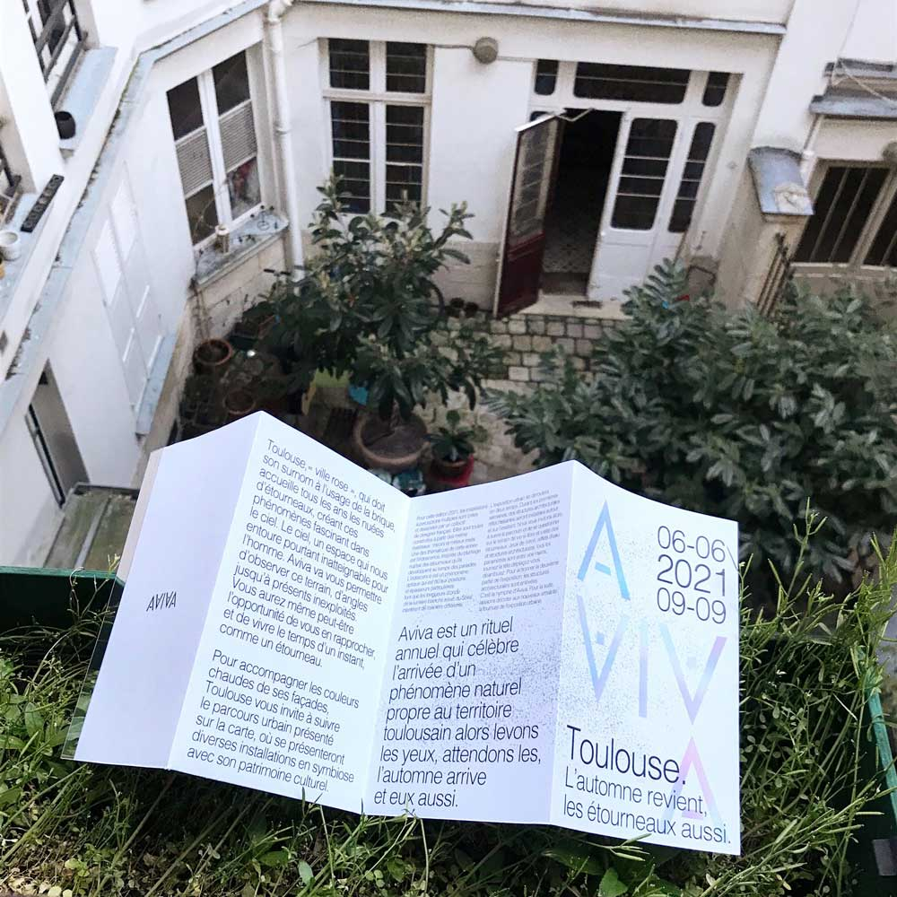

EN
Toulouse, surnamed « pink city » due to the architecture made of bricks, experiences the arrival of starlings, dancing in the sky creating boids. The sky, this space unatteignable above us. Aviva is an urban exhibition organized to observe this space from differents angles. If you are lucky, the visitors even might have the opportunity to interact with the starlings, and for an instant, experience the living-like the birds.
Toulouse organizes an urban exploration based on a map, where several installations will be co-existing with its’ cultural heritage.
Aviva is an annual ritual which celebrates the arrival of a natural phenomon, the autonmnal arrival of starings. Let’s look up in the sky and wait for it. As automn comes back, starings too.
Aviva
FR
Toulouse, « ville rose », qui doit son surnom à l'usage de la brique, accueille tous les ans les nuées d’étourneaux, créant ces phénomènes fascinant dans le ciel. Le ciel, un espace qui nous entoure pourtant inatteignable pour l’homme. Aviva est une exposition urbaine qui va vous permettre d’observer ce terrain, d’angles jusqu’à présents inexploités. Vous aurez même peut-être l’opportunité de vous en rapprocher, et de vivre le temps d’un instant, comme un étourneau.
Pour accompagner les couleurs chaudes de ses façades, Toulouse vous invite à suivre le parcours urbain présenté sur la carte, où se présenteront diverses installations en symbiose avec son patrimoine culturel.
Aviva est un rituel annuel qui célèbre l’arrivée d’un phénomène naturel propre au territoire toulousain alors levons les yeux, attendons les, l’automne arrive et eux aussi.
Toulouse, « ville rose », qui doit son surnom à l'usage de la brique, accueille tous les ans les nuées d’étourneaux, créant ces phénomènes fascinant dans le ciel. Le ciel, un espace qui nous entoure pourtant inatteignable pour l’homme. Aviva est une exposition urbaine qui va vous permettre d’observer ce terrain, d’angles jusqu’à présents inexploités. Vous aurez même peut-être l’opportunité de vous en rapprocher, et de vivre le temps d’un instant, comme un étourneau.
Pour accompagner les couleurs chaudes de ses façades, Toulouse vous invite à suivre le parcours urbain présenté sur la carte, où se présenteront diverses installations en symbiose avec son patrimoine culturel.
Aviva est un rituel annuel qui célèbre l’arrivée d’un phénomène naturel propre au territoire toulousain alors levons les yeux, attendons les, l’automne arrive et eux aussi.
